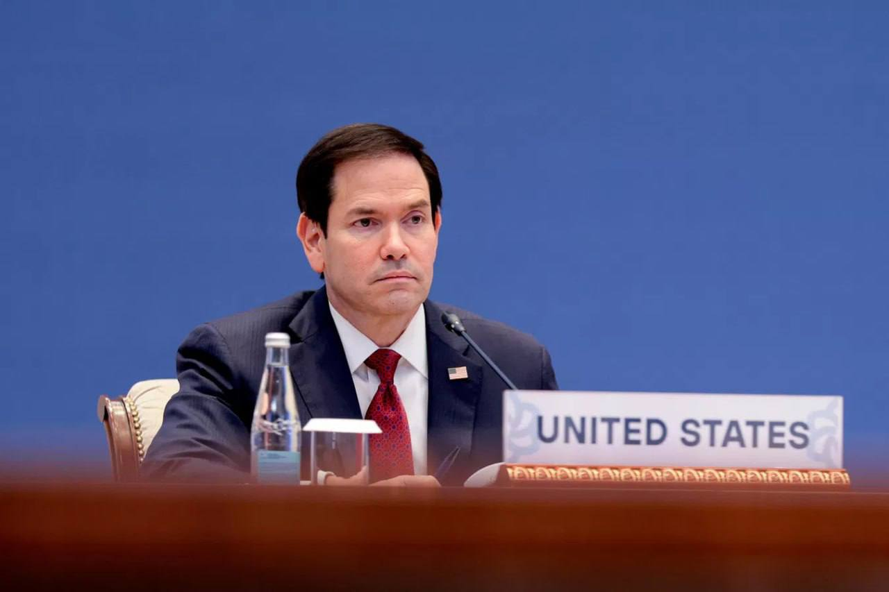

Топор Live
@toporlive
Топор Live
@toporlive
Я не знаю возможно ли достичь мира на территории Украины путём переговоров именно это мы и пытаемся выяснить Рубио.

⚡️Я не знаю, возможно ли достичь мира на территории Украины путём переговоров, именно это мы и пытаемся выяснить, — Рубио.
Другие заявления госсекретаря США:
Другие заявления госсекретаря США:
— Не думаю, что кто-либо из присутствующих утверждает, будто мы находимся на пороге заключения мирного соглашения;
— Трамп решит позже, приглашать ли Зеленского на саммит G20 в декабре в США, это не исключено;
— Трамп считает важным, чтобы РФ была частью переговоров в G20;
— Россия обладает большим количеством ядерного оружия. Возможно, люди об этом забыли. Это важно;
— Участие Лаврова в совещании G20 в Атланте было хорошей возможностью продолжать взаимодействовать с РФ;
— Трамп не принимал решение о возобновлении войны с Ираном и предпочитает дипломатию;
— Переговоры США с Ираном никогда не прекращались и продолжаются как напрямую, так и через посредников.